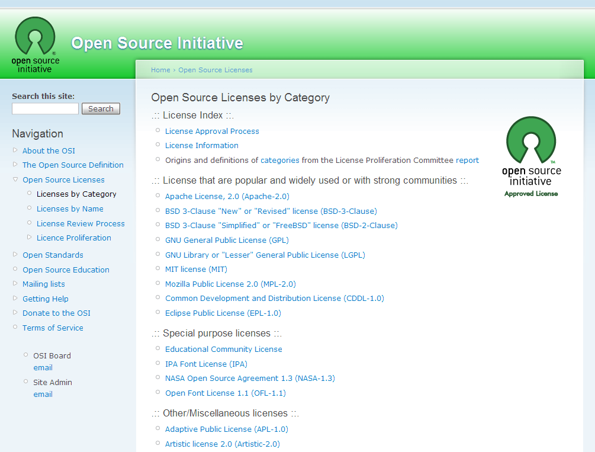

感謝您對「自由軟體鑄造場」的支持與愛護，十多年來「自由軟體鑄造場」受中央研究院支持，並在資訊科學研究所以及資訊科技創新研究中心執行，現已完成階段性的任務。 本網站預計持續維運至 2021年底，網站內容基本上不會再更動。
也紀念我們永遠的朋友 李士傑先生（Shih-Chieh Ilya Li）。
也紀念我們永遠的朋友 李士傑先生（Shih-Chieh Ilya Li）。
CDDL－MPL 的衍生條款
Created at Thursday, 27 December 2007 08:00 Last Updated on Monday, 14 May 2012 14:26
開放源碼促進會 (Open Source Initiative, OSI) 日前將自由開源軟體授權條款分為 7 大類，第一類是屬於被廣泛應用或者是有堅強社群支持的授權條款，包括 GPL、BSD、MIT、MPL 等 9 份條款被歸在這一類，其中由昇陽公司（Sun Microsystems, Inc. 1982~2010，註一）草擬，於 2005 初為 OSI 通過認可的 CDDL-1.0 (Common Development and Distribution License 1.0) 也在第一類之列。而就條款內容來看，CDDL-1.0 目前使用的普及率雖然不高，但是其具有架構完整、用詞淺顯易懂、可重複被不同授權性質專案引用，且不致產生過大授權衝突的特性，是一份在授權規劃與文字表達上均相當成熟的授權條款，值得特文介紹來讓更多人能夠了解。
▲ 圖1 開放源碼促進會將自由開源軟體授權條款依特性分為 7 大分類，2012 年 3 月 16 日截圖於右列網址：https://www.opensource.org/licenses/category
CDDL-1.0 是由商業公司聘任專職人員來起草，因此與 MPL-1.1、EPL-1.0、CPL-1.0 有著類似的產生背景，其適宜配合商業模式運作的法律邏輯架構亦相當完整。而 Sun Microsystems 當初是以 MPL-1.0 與 MPL-1.1 的內容做為 CDDL-1.0 的起草藍圖（註二），所以在運作模式與授權架構上，CDDL-1.0 與 MPL-1.0、MPL-1.1 有著許多相似的特質。
在授權拘束性方面，與 MPL-1.1 一樣，CDDL-1.0 僅具有部分的 Copyleft 特性，簡單來說、只有修改到 CDDL-1.0 授權元件所產生的結果，才會被 CDDL-1.0 授權條款所拘束！舉例來說、最基本的授權拘束範例包括直接對 CDDL-1.0 授權的檔案進行修改，或是將 CDDL-1.0 授權元件與其他程式碼包含在一個檔案內，這些都是較典型的直接修改，而會啟動 CDDL-1.0 授權拘束特性；然而、若是將自行獨立開發的程式元件，以不同檔案的方式，與 CDDL-1.0 授權元件放在同一個大型軟體專案 (larger work) 裡面進行互動，則此時自行獨立開發的部分，則可以不用受到 CDDL-1.0 授權條款的拘束，而可以採用與 CDDL-1.0 不同，但亦不會互相干擾的授權方式來進行散布。而在專利權的部分，CDDL-1.0 的專利授權條款與專利侵權終止條款，與 MPL-1.1 第 8 條第 2 項所規定的權利追索條款相當近似，只是 CDDL-1.0 的文字經過簡化，對於不具法律背景的程式開發者來說，較易閱讀與理解。而在可執行目的檔格式 (binary code) 的授權方式部份，其也與 MPL-1.1 一樣，允許這個目的檔可以適用非 CDDL-1.0 的授權條款，只要這個目的檔的授權方式，不會影響到使用者依照 CDDL-1.0 利用該元件程式源碼的權利。
除了上述相同的特質外，CDDL-1.0 還有些不同於 MPL-1.1 的其他規定，這些其他規定使得 CDDL-1.0 更具有彈性。以下即列舉管轄法院與準據法、散布者對條款版本升級的選擇規定，以及明示授權範圍包含程式相關文件等其他條款，來觀察 CDDL-1.0 相關的彈性規定。
早期、不少自由開源軟體授權條款，都有特定管轄法院與準據法方面的規定，也就是當發生法律糾紛的時候，必須要適用條款所指定的管轄法院與特定區域的法律，來作為解決糾紛的依據。通常有此種規定的條款，都是為了符合草擬者的特定需求，例如 QPL-1.0 授權條款的草擬者為挪威 Trolltech 公司，所以 QPL-1.0 規定管轄法院為挪威奧斯陸地方法院，準據法的依據也是挪威法律；而 MPL-1.1 的草擬者為美國 Netscape 公司 (Netscape Communications Corporation)，而 MPL-1.1 規定的管轄法院為美國加州北區地方法院，準據法亦為加州州法（註三）。這種特定管轄法院與準據法的內容，早期常出現在起草者為商業公司的自由開源軟體授權條款中，不過 Sun Microsystems 草擬的 CDDL-1.0 並未承襲這樣的架構，其條款內容並未特定管轄法院與準據法，而是交由開發軟體專案的權利人來自行決定，如果權利人願意，只要在條款之後加上一份聲明，說明該專案的管轄法院與準據法即可，然而，權利人也可以用不指定管轄法院與準據法的方式來散布這個專案。這樣的規定提高了 CDDL-1.0 的重複使用性與全球散布性，如此一來、不同地域的開發專案都可以為自己的軟體選用 CDDL-1.0 來授權，而不必擔心日後發動訴訟時，得要舟車勞頓到其他司法管轄領域去，而專案的權利人在有需要的情況下，也可以在後續版本附加上管轄法院與準據法方面的聲明，即可為後續散布版本指定符合其需求的管轄法院與準據法。
在條款版本升級選擇規定方面，CDDL-1.0 原則上也是採取類似 MPL-1.1 的規定：沒有特別聲明情況下，一旦 Sun Microsystems 有新的 CDDL 版本發佈後，原以 CDDL-1.0 授權方式得到該元件的使用者，便可選擇新版 CDDL 的授權方式，或繼續沿用舊版 CDDL-1.0 的方式來適用以及散布此元件及其衍生程式。除此之外、與 MPL-1.1 相較，CDDL-1.0 進一步賦與 CDDL 專案的原始開發者 (Initial Developer)，可以排除自動升級選擇機制的地位，也就是說、若是 CDDL 元件的原始開發者，已明確加註聲明要求後手以「限定原 CDDL 授權版本」的方式來使用該元件，那麼此一元件後續的使用者及散布者，才就沒有前述適用 CDDL 新版本授權條款的選擇地位。相對於其他自由開源軟體授權條款，多以指定版本、或是完全不限定授權版本的方式來散布，CDDL-1.0 對於授權條款升級版本的選擇機制，也提供了軟體使用人相當大的自主選擇彈性。
最後、在授權客體上，不少自由開源軟體授權條款的內容多僅描述程式碼授權相關的方式，對於授權範圍是否擴及到程式相關的文件並不明確，但是 CDDL-1.0 明白表示，其適用客體及於「包括在或者附隨於程式碼的相關文件（註四）」，這對於準備將相關文件隨著程式一起散布出去的權利人來說，便不需要另行為文件準備其他的公眾授權條款，而可以與程式碼一起以 CDDL-1.0 的方式散布出去，算是一個相當便利的規定。
多數接觸自由開源軟體的朋友都會知道 GPL、BSD、MIT、MPL 與 Apache 等知名的授權條款，這些條款各有其授權特點，但有時也因為這些特點，讓不同授權方式的元件，不見得都能夠被適用在每一個集合式的大型軟體專案裡被運用，而即使可以適用、可能也不符合部份商業公司預期的產品運轉模式，所以才會有人在這些既有條款外，陸續地擬定出數十份內容不盡相同的自由開源軟體授權條款，這樣的現象演變到今天，其實會造成自由開源元件應用上一定程度的阻礙，因為當想要擷取不同授權方式的元件來開發軟體專案時，首當其衝的工作就是必須先面對各元件授權條款是否衝突的問題－也就是要先做好研讀條款的功課，確定各元件彼此間的條款狀態是相容的，而如果僅透過單一工程師的話，要解決或避免這樣授權相容的問題並非易事。而解決這個困境的方法之一，就是減少自由開源軟體授權條款的數量，如此可以降低分析條款相容性的複雜程度，而若是某一授權條款的內容，在架構上的設定是可以讓不同性質的軟體專案都能夠同時取用，這也是一個可行的努力方向。所以 Sun Microsystems 當初草擬 CDDL-1.0 時，就是將可被不同性質軟體專案重複取用，當作是條款設計上的重要原則之一，在這樣的原則之下，CDDL-1.0 用詞淺顯易懂，再加上部分 Copyleft 的拘束性、不特定管轄法院與準據法，以及原則上讓散布者擁有後續條款版本的選擇權等等特性，都大大地增加了不同性質軟體專案對這份條款的接受度。
近年來使用 CDDL-1.0 的自由開源軟體專案，仍以 Sun Microsystems 早期便以自由開源方式進行開發的產品為主要對象，主要包括 OpenSolaris、NetBeans、GlassFish 等（註五），這些專案本已具有一定程度的規模與成熟度，過往 Sun Microsystems 亦在背後持續的支持相關的開發社群，其後 Oracle 承襲以往，亦以 CDDL-1.0 的方式來繼續散布這些專案，然而、多數的專案後續除了 CDDL-1.0 之後，也併以 GPL-2.0 的授權方式向外釋出。就個人的觀察來說，相較於 MPL、EPL 與 CPL 等同樣具商業考量架構在內的自由開源軟體授權條款，筆者相當喜歡 CDDL-1.0 這樣深入淺出又具有彈性的授權內容，但因其最初的起草公司 Sun Microsystems 已為 Oracle 併購，目前多數 CDDL-1.0 授權專案也多與 GPL-2.0 雙授權的模式向外散布，故未來發展如何、則還要進行持續的觀察。
註一：Sun Microsystems 創建於 1982 年，1992 年推出了當時第一台多處理器工作站 SPARCstation 10，其公司名稱是由 Stanford University Network 縮寫而來，歷年來 Sun Microsystems 持續發起並支持了許多的自由開源軟體專案，其作業系統 Solaris 亦有開源版本，稱為 OpenSolaris，至 2009 年 4 月 20 日，Sun Microsystems 宣佈以每股 9.50 美元，總數約 74 億美金的價額為 Oracle 公司所收購。
註二：有關 MPL 授權條款的相關介紹請參見，葛冬梅，從封閉到開放的副產品－MPL：https://www.openfoundry.org/index.php?option=com_content&task=view&id=517&Itemid=56，自由軟體鑄造場電子報，第 48 期。
註三：參見：QPL-1.0 授權條款最後條款「Choice of Law」，MPL-1.1 授權條款第 11 條的文字內容。
註四：CDDL-1.0 第 1 條第 12 項：「Source Code means (a) the common form of computer software code in which modifications are made and (b) associated documentation included in or with such code.」
註五：OpenSolaris 專案的授權頁面：https://hub.opensolaris.org/bin/view/Main/opensolaris_license；NetBeans 專案的授權頁面：https://netbeans.org/cddl-gplv2.html；GlassFish 專案的授權頁面：https://glassfish.java.net/public/CDDL+GPL_1_1.html。
OSSF Newsletter : 第 95 期 Adobe 釋出開放源碼工具 BlazeDS
Tags: 管轄法院準據法, 說明文件, CDDL, MPL,
Category: Legal Column
Special


Open Source Software Foundry‧ Best Viewed with IE7.0 or Firefox2.0 above, 1024x768 Resolution. E-Mail：contact@openfoundry.org
Address：No.128, Sec.2, Academia Rd., Institute of Information Science, Academia Sinica, Nangang District, Taipei City 11529, Taiwan (R.O.C).
Privacy Policy. Terms-of-use
Address：No.128, Sec.2, Academia Rd., Institute of Information Science, Academia Sinica, Nangang District, Taipei City 11529, Taiwan (R.O.C).
Privacy Policy. Terms-of-use